전자기사 (2015-05-31 기출문제)
1과목: 전기자기학
1. 그림과 같은 단극 유도장치에서 자속밀도 B(T)로 균일하게 반지름 a(m)인 원통형 영구자석 중심축 주위를 각속도 ω(rad/s)로 회전하고 있다. 이 때 브러시(접촉자)에서 인출되어 저항 R(Ω)에 흐르는 전류는 몇 [A]인가?
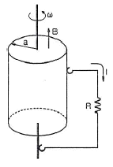
- aBω/R
- a2Bω/R
- aBω/2R
- a2Bω/2R
(정답률: 65%)

2. 다음 ( )안의 ㉠과 ㉡에 들어갈 알맞은 내용은?
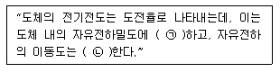
- ㉠ 비례, ㉡ 비례
- ㉠ 반비례, ㉡ 반비례
- ㉠ 비례, ㉡ 반비례
- ㉠ 반비례, ㉡ 비례
(정답률: 72%)
3. 평면도체 표면에서 d(m)의 거리에 점전하 Q(C)가 있을 때 이 전하를 무한원까지 운반하는데 필요한 일은 몇 [J]인가?
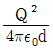
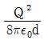
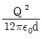
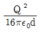
(정답률: 71%)
4. 다음 중 틀린 것은?
- 도체의 전류밀도 J는 가해진 전기장 E에 비례하여 온도변화와 무관하게 항상 일정하다.
- 도전율의 변화는 원자구조, 불순도 및 온도에 의하여 설명이 가능하다.
- 전기저항은 도체의 재질, 형상, 온도에 따라 결정되는 상수이다.
- 고유저항의 단위는 Ωㆍm이다.
(정답률: 64%)
5. 두 개의 자극판이 놓여 있을 때 자계의 세기 H(AT/m), 자속밀도 B(Wb/m2), 투자율 μ(H/m)인 곳의 자계의 에너지밀도(J/m3)는?
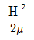
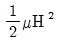
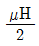
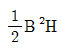
(정답률: 67%)
6. 유전율 ε, 전계의 세기 E인 유전체의 단위 체적에 축적되는 에너지는?
- E/2Є
- ЄE/2
- ЄE2/2
- Є2E2/2
(정답률: 80%)
7. 내경의 반지름이 1mm, 외경의 반지름이 3mm인 동축 케이블의 단위 길이당 인덕턴스는 약 몇 [μH/m]인가? (단, 이 때 μr=1이며, 내부 인덕턴스는 무시한다.)
- 0.12
- 0.22
- 0.32
- 0.42
(정답률: 54%)
8. 자기쌍극자에 의한 자위 U(A)에 해당되는 것은? (단, 자기쌍극자의 자기모멘트는 M(Wbㆍm), 쌍극자의 중심으로부터의 거리는 r(m), 쌍극자의 정방향과의 각도는 θ라 한다.)
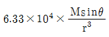
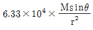
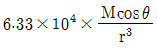
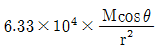
(정답률: 77%)
9. 수직 편파는?
- 전계가 대지에 대해서 수직면에 있는 전자파
- 전계가 대지에 대해서 수평면에 있는 전자파
- 자계가 대지에 대해서 수직면에 있는 전자파
- 자계가 대지에 대해서 수평면에 있는 전자파
(정답률: 53%)
10. 영구자석에 관한 설명으로 틀린 것은?
- 한번 자화된 다음에는 자기를 영구적으로 보존하는 자석이다.
- 보자력이 클수록 자계가 강한 영구자석이 된다.
- 잔류 자속밀도가 클수록 자계가 강한 영구자석이 된다.
- 자석재료로 폐회로를 만들면 강한 영구자석이 된다.
(정답률: 77%)
11. 자극의 세기가 8×10-6[Wb], 길이가 3[cm]인 막대자석을 120[AT/m]의 평등자계 내에 자력선과 30°의 각도로 놓으면 이 막대자석이 받는 회전력은 몇 [Nㆍm]인가?
- 3.02×10-5
- 3.02×10-4
- 1.44×10-5
- 1.44×10-4
(정답률: 74%)
12. 원점에서 점(-2, 1, 2)로 향하는 단위벡터를 a1이라 할 때 y=0인 평면에 평행이고 a1에 수직인 단위벡터 a2는?
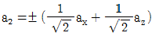
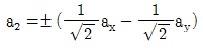
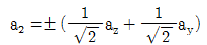
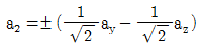
(정답률: 74%)
13. 비유전율이 10인 유전체를 5[V/m]인 전계 내에 놓으면 유전체의 표면전하밀도는 몇 [C/m2]인가? (단, 유전체의 표면과 전계는 직각이다.)
- 35ε0
- 45ε0
- 55ε0
- 65ε0
(정답률: 60%)
14. 내구의 반지름이 a(m), 외구의 내반지름이 b(m)인 동심 구형 콘덴서의 내구의 반지름과 외구의 내반지름을 각각 2a(m), 2b(m)로 증가시키면 이 동심구형 콘덴서의 정전용량은 몇 배로 되는가?
- 1
- 2
- 3
- 4
(정답률: 73%)
15. 반경 r1, r2인 동심구가 있다. 반경 r1, r2인 구 껍질에 각각 +Q1, +Q2의 전하가 분포되어 있는 경우 r1≤r ≤r2에서의 전위는?
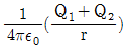
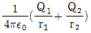
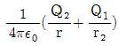
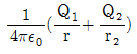
(정답률: 58%)
16. 평면 전자파에서 전계의 세기가
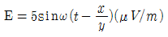
인 공기 중에서의 자계의 세기는 몇 [μA/m]인가?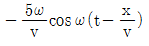
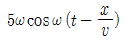
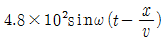
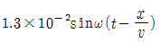
(정답률: 64%)
17. 그림과 같은 동축원통의 왕복 전류회로가 있다. 도체 단면에 고르게 퍼진 일정 크기의 전류가 내부 도체로 흘러 들어가고 외부 도체로 흘러나올 때 전류에 의하여 생기는 자계에 대하여 틀린 것은?
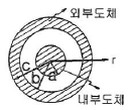
- 외부 공간 (r＞c)의 자계는 영(0)이다.
- 내부 도체 내(r＜a)에 생기는 자계의 크기는 중심으로부터 거리에 비례한다.
- 외부 도체 내(b＜r＜c)에 생기는 자계의 크기는 중심으로부터 거리에 관계없이 일정하다.
- 두 도체사이(내부공간)(a＜r＜b)에 생기는 자계의 크기는 중심으로부터 거리에 반비례한다.
(정답률: 62%)
18. 다음 중 식이 틀린 것은?
- 발산의 정리 :

- Poisson의 방정식 :

- Gauss의 정리 : divD=ρ
- Laplace의 방정식 : ▽2V=0
(정답률: 63%)
19. 길이 ℓ(m), 단면적의 반지름 a(m)인 원통이 길이 방향으로 균일하게 자화되어 자화의 세기가 J(Wb/m2)인 경우, 원통 양단에서의 전자극의 세기 m(Wb)은?
- J
- 1πJ
- πa2J
- J/πa2
(정답률: 65%)
20. 반경 인 구도체에 -Q의 전하를 주고 구도체의 중심 O에서 10a 되는 점 P에 10Q의 점전하를 놓았을 때, 직선 OP 위의 점 중에서 전위가 0이 되는 지점과 구도체의 중심 O와의 거리는?
- a/5
- a/2
- a
- 2a
(정답률: 67%)
2과목: 회로이론
21. 다음 회로에서 전류 I1(실효값)은? (단, n1 : n2 = 1 : 10 이다.)(오류 신고가 접수된 문제입니다. 반드시 정답과 해설을 확인하시기 바랍니다.)
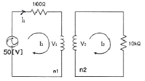
- 500mA
- 250mA
- 125mA
- 50mA
(정답률: 54%)
22. L=10(mH)인 인덕턴스에 i(t)=10e-5t(A)인 전류가 흐르는 경우, t=0에서 인덕턴스 L의 단자전압은?
- 0.⑤V
- 0.5V
- -0.⑤V
- -0.5V
(정답률: 66%)
23. 그림과 같은 회로가 정저항 회로가 되기 위한 ωL의 값은?
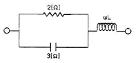
- 12/13Ω
- 1Ω
- 14/13Ω
- 15/13Ω
(정답률: 59%)
24. 500(mH)인 코일에 흐르는 전류를 30[A/s]의 비율로 증가시킬 때, 코일 양단에 나타나는 전압의 크기는? (단, 전압의 크기는 절대값이다.)
- 0.15V
- 1.5V
- 15V
- 150V
(정답률: 54%)
25. 다음과 같은 회로망에서 단자 1, 2에서 바라본 데브난 등가저항의 크기는?
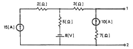
- 3Ω
- 5Ω
- 8Ω
- 12Ω
(정답률: 58%)
26. 회로에서 스위치가 오랫동안 개방되어 있다가 t=0에 닫았을 때, 바로 직후의 전류 iL(0+)와 전압 vC(0+)으로 적절한 것은? (단, t< 0에서 VC = 3V이다.)
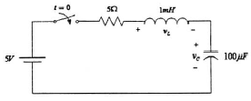
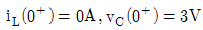
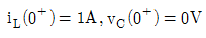
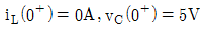
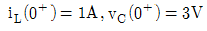
(정답률: 65%)
27. C(s)=G(s)R(s)에서 입력 함수로 단위 임펄스 δ(t)를 가할 때 출력 C(s)는? (단, G(s)는 전달함수, R(s)는 입력이다.)
- G(s)
- G(s)/s
- sG(s)
- 1
(정답률: 73%)
28. 회로에 전압과 전류가 각각 V(t)=Asinωt, I(t)=Bsin(ωt+θ)일 때, 소비되는 평균전력은?
- ABsinθ/2
- ABcosθ/√2
- ABsinθ/√2
- ABcosθ/2
(정답률: 60%)
29. 정현 대칭에서 성립하는 함수식은?
- f(t) = 1/f(t)
- f(t) = -f(t)
- f(t) = f(-t)
- f(t) = -f(-t)
(정답률: 60%)
30. 회로에서 결합계수가 K일 때 상호인덕턴스 M은?
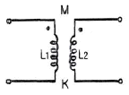
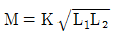
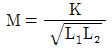
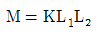
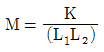
(정답률: 73%)
31. 내부 임피던스 Zg=0.2+j2Ω인 발전기에 임피던스 Z1=2.0+j3Ω인 선로를 연결하여 부하에 전력을 공급할 때 부하에 최대 전력이 전송되기 위한 부파 임피던스는?
- 1.8+jΩ
- 1.8-jΩ
- 2.2+j5Ω
- 2.2-j5Ω
(정답률: 55%)
32. 그림과 같은 파형의 평균값은? (단, y=10 e-200t 이다.)
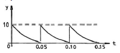
- 1
- 5
- 5/√2
- √5
(정답률: 48%)
33. 선형 회로에서 시변 용량을 갖는 커패시터의 전류 i(t)는?
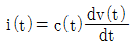
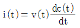
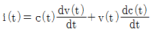
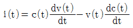
(정답률: 48%)
34. 차단 주파수에 대한 설명으로 틀린 것은?
- 출력 전압이 최대값의 1/√2이 되는 주파수이다.
- 전력이 최대값의 1/2이 되는 주파수이다.
- 전압과 전류의 위상차가 60°가 되는 주파수이다.
- 출력 전류가 최대값의 1/√2이 되는 주파수이다.
(정답률: 64%)
35. 그림과 같은 R-C 회로에서 변환 임피던스(transform impedance) Z(s)를 구하면?
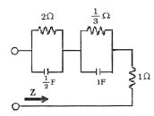
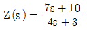
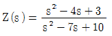
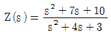
(정답률: 50%)
36. 다음 그림의 라플라스(Laplace) 변환은?
- m/s3
- m/s2
- m/s
- 1/sm
(정답률: 30%)
37. 임피던스 Z(S)가 인 2단자 회로에 직류 전류 20[A]를 인가할 때 단자 전압은?
- 20V
- 40V
- 200V
- 400V
(정답률: 58%)
38. 4단자 ABCD 파라미터의 표현이 틀린 것은?
(정답률: 38%)
39. π형 회로망의 어드미턴스 파라미터 관계가 틀린 것은?
- Y11 = Ya + Yb
- Y22 = Ya + Yc
- Y12 = -Ya
- Y21 = Ya
(정답률: 43%)
40. RL 직렬회로에 일정한 정현파 전압을 인가하였을 때 인덕터의 양단 전압에 나타나는 현상은?
- 신호원의 전압과 위상이 동일한 형태로 나타난다.
- 인덕터 전류와 위상이 동일한 형태로 나타난다.
- 저항양단 전압보다 90°만큼 앞선 위상이 나타난다.
- 신호원 전압보다 90°만큼 앞선 위상이 나타난다.
(정답률: 40%)
3과목: 전자회로
41. 부성저항 특성을 가지고 있어 발진회로에 응용 가능한 소자는?
- CdS
- 서미스터
- 제너 다이오드
- 터널 다이오드
(정답률: 67%)
42. 귀환 발진기의 발진 조건을 나타내는 식은? (단, A는 증폭도, β는 귀환율이다.)
- βA=1
- βA=0
- βA=100
- βA=∞
(정답률: 47%)
43. 발진회로 구성시 유의사항으로 틀린 것은?
- 발진소자는 온도편차가 적은 것으로 선정한다.
- 발진회로내의 연결선은 가능한 한 짧아야 좋다.
- 발진주파수는 외부로 많이 방사 되도록 한다.
- 발진회로 주변은 그라운드(Ground)로 차폐한다.
(정답률: 69%)
44. 수정발진기의 특징으로 가장 적합한 것은?
- 가변성
- 안정성
- 경제성
- 높은 발진 주파수
(정답률: 73%)
45. 연산회로에서 입력전압이 각각 V1=5[V], V2=10[V]이고, 저항 R1=R2=Rf=10[kΩ]일 때 출력 전압은?
- -5[V]
- -15[V]
- 10[V]
- 20[V]
(정답률: 47%)
46. MOSFET의 채널은 어느 단자 사이에 형성되는가?
- 입력과 출력 사이
- 게이트와 소스 사이
- 게이트와 드레인 사이
- 드레인과 소스 사이
(정답률: 53%)
47. 2단 연산증폭기의 종합이득(Vo/Vs)은?
- 26[dB]
- 40[dB]
- 46[dB]
- 52[dB]
(정답률: 53%)
48. 베이스 접지 증폭회로에 대한 설명으로 틀린 것은?
- 고주파수 특성이 양호하다.
- 입출력 위상은 동위상이다.
- 입력저항은 수십[Ω] 정도로 작다.
- 전류이득이 수십 ~ 수백으로 크다.
(정답률: 54%)
49. 1[kHz]의 신호파로 100[MHz]의 반송파를 주파수 변조하였을 때 최대 주파수편이가 ±49[kHz]이면 점유 주파수 대역폭은?
- 200[kHz]
- 100[kHz]
- 50[kHz]
- 1[kHz]
(정답률: 65%)
50. 회로(a)와 회로(b)가 등가가 되기 위한 밀러 커패시턴스의 용량은 약 얼마인가? (단, Av=100, C=1[μF])
- C1 = 100[μF], C2 = 10[μF]
- C1 = 100[μF], C2 = 1[μF]
- C1 = 1[μF], C2 = 100[μF]
- C1 = 10[μF], C2 = 100[μF]
(정답률: 60%)
51. 교류 전압에 직류 레벨을 더하는 회로는?
- 클리퍼
- 클램퍼
- 리미터
- 필터
(정답률: 67%)
52. fT가 10[MHz]인 트랜지스터가 중간영역에서 전압이득이 26[dB]인 증폭기로 사용될 때 이상적으로 이룰 수 있는 대역폭은?
- 50[kHz]
- 193[kHz]
- 385[kHz]
- 500[kHz]
(정답률: 55%)
53. 정현파 신호를 변조도 50[%]로 진폭 변조하고 반송파 전력이 1[mW]라고 할 때 상측대파와 하측대파 전력의 합은?
- 1/2[mW]
- 1/4[mW]
- 1/8[mW]
- 1/16[mW]
(정답률: 50%)
54. 저주파 증폭기에서 입력이 100[mV], 전압 이득이 60[dB]일 때 출력 전압의 왜율은? (단, 제2 및 제3 고조파 전압이 각각 1.73[V], 1[V]이다.)
- 1[%]
- 2[%]
- 5[%]
- 7[%]
(정답률: 59%)
55. 연산 증폭기의 출력전압(Vo)으로 가장 적합한 것은?
- Vo = Vs
- Vo = AㆍVs
- Vo = 0
- Vo = 1
(정답률: 56%)
56. A급 증폭회로의 동작점을 구하는 방법은?
- 직류 부하선을 평행 이동하여 교류 부하선과 만난점이 1/2일 때
- 직류 부하선을 평행 이동하여 교류 부하선과 만난점이 1/4일 때
- 교류 부하선을 평행 이동하여 직류 부하선과 만난점이 1/2일 때
- 교류 부하선을 평행 이동하여 직류 부하선과 만난점이 1/4일 때
(정답률: 54%)
57. 다음 회로와 같은 게이트의 기능은?
- PMOS NOT
- PMOS NAND
- CMOS NOT
- CMOS NAND
(정답률: 50%)
58. 발진주파수를 안정시키는 방법으로 적합하지 않은 것은?
- 항온조 시설을 한다.
- 정전압 회로를 설치한다.
- 주파수 체배기를 사용한다.
- 온도 보상용 부품을 사용한다.
(정답률: 48%)
59. 미분기의 출력과 입력은 어떤 관계인가?
- 출력은 입력의 변화율에 비례한다.
- 출력은 입력의 변화율에 무관하다.
- 출력은 입력의 변화율에 반비례한다.
- 출력은 입력의 변화율의 제곱에 반비례한다.
(정답률: 65%)
60. 단상전파정류회로의 맥동 전압주파수가 전원주파수의 3배가 되는 정류방식은?
- 3상 반파정류
- 단상 브리지정류
- 단상 전파정류
- 3상 전파정류
(정답률: 55%)
4과목: 물리전자공학
61. 다음 중 에피택셜(epitaxial) 성장이란?
- 다결정의 Ge 성장
- 다결정의 Si 성장
- 기판에 매우 얇은 단결정의 성장
- 기판에 매우 얇은 다결정의 성장
(정답률: 67%)
62. 전자의 운동방향과 균일한 자계(B)가 서로 수직한 경우 전자의 운동 방경 r은? (단, 전자의 전하 e, 속도 v, 질량 m이다.)
(정답률: 45%)
63. 접합 트랜지스터를 실제로 응용하기 위한 요구조건이 아닌 것은?
- 컬렉터 영역에 역바이어스 인가시 절연파괴 전압을 높이기 위해 캐리어 밀도를 낮게 하여 고유저항을 높여야 한다.
- 이미터로부터 이동한 캐리어가 쉽게 컬렉터로 끌리도록 베이스 영역의 캐리어 밀도가 컬렉터 영역보다 높아야 한다.
- 높은 주입 효율을 주기 위하여 이미터 영역의 캐리어 밀도는 베이스 영역보다 높아야 한다.
- 정상적인 동작 상태에서 이미터-베이스 접합은 역바이어스, 베이스-콜렉터 접합은 정바이어스 되어야 한다.
(정답률: 53%)
64. 반도체의 특성에 대한 설명으로 틀린 것은?
- 홀 효과가 크다.
- 빛을 쪼이면 도전율이 증가한다.
- 불순물을 첨가하면 도전율이 감소한다.
- 온도에 의해 도전율이 현저하게 변화한다.
(정답률: 75%)
65. Na 금속의 한계 주파수가 4.35×1014[Hz]이다. 이 금속의 일함수는? (단, plank 상수는 6.625×10-34[Jㆍsec], 전자의 전하 e=1.602×10-19[C])
- 약 1.8V
- 약 2.5V
- 약 3.6V
- 약 5V
(정답률: 48%)
66. Fermi-Dirac 분포함수 f(E)에 대한 설명으로 틀린 것은? (단 Ef는 페르미준위이다.)
- T=0[K]일 때 E>Ef 이면 f(E)=0 이다.
- T=0[K]일 때 E
- 절대온도에 따라 전자가 채워질 확률은 일정하다.
- T=0[K]일 때 Ef 보다 낮은 에너지준위는 전부 전자로 채워있으며, Ef 이상의 준위는 전부 비어있다.
(정답률: 53%)
67. 페르미준위가 5[eV]일 때 전자의 속도는 얼마인가?
- 5.93×105[m/s]
- 1.33×106[m/s]
- 5.93×106[m/s]
- 1.33×107[m/s]
(정답률: 39%)
68. 운동 에너지를 10-16[J] 갖고 있는 전자를 정지시키기 위해서는 몇 [V]의 전압을 공급해야 하는가?
- 1×102
- 1.6×103
- 6.25×104
- 6.25×102
(정답률: 44%)
69. PN접합에서 접촉전위차에 대한 설명으로 옳은 것은?
- 불순물 농도가 커지면 전위차는 작아진다.
- 진성캐리어는 농도가 낮을수록 전위차는 높아진다.
- 온도가 높아지면 전위차도 높아진다.
- 전계작용에 의해 발생한다.
(정답률: 45%)
70. d=0.2[mm]인 Ge 시료에 10[mA]의 전류(I)를 통하고 이에 수직인 방향으로 B=0.1[Wb/m2]의 자장을 가할 경우 홀(Hall) 기전력은? (단, RH=2×10-4[m3/C])
- 0.01[mV]
- 0.1[mV]
- 1[mV]
- 10[mV]
(정답률: 60%)
71. Si 단결정 반도체에서 n형 불순물로 사용될 수 있는 것은?
- 인듐(In)
- 비소(As)
- 붕소(B)
- 알루미늄(Al)
(정답률: 63%)
72. 드리프트 트랜지스터(drift transistor)의 설명으로 틀린 것은?
- 컬렉터 용량이 감소한다.
- 이미터 효율이 적어진다.
- 이미터 용량이 증가한다.
- 컬렉터 항복 전압이 낮아진다.
(정답률: 38%)
73. 드리프트 운동과 확산 운동의 관계를 나타낸 아인슈타인 관계식은?
(정답률: 64%)
74. 가전자대의 전자밀도가 8.4×1028[개/m3]인 금속에 전류밀도가 2×106[A/m2]인 전류가 흐를 때 드리프트 속도는?
- 1.488×104[m/s]
- 6.25×104[m/s]
- 1.488×10-4[m/s]
- 6.25×10-4[m/s]
(정답률: 60%)
75. 다이라트론(thyratron)의 그리드(grid) 작용은 방전이 일어난 후에는 제어기능이 상실되는데 그 원인으로 적당한 것은?
- 그리드가 음극에 가깝기 때문
- 그리드가 양극에 가깝기 때문
- 방전시 발생하는 음이온 때문
- 방전시 발생하는 양이온 때문
(정답률: 20%)
76. 어떤 물질에 X선을 쬐었을 때 산란되는 X선 중에 입사 X선과 같은 파장인 것 이외에 긴 파장이 존재한다는 효과는?
- Hall 효과
- Compton 효과
- 광전 효과
- 에디슨 효과
(정답률: 56%)
77. 전자의 이동도 μn=8×10-4[m2/Vㆍs]인 도체에 전계 E=10[V/m]를 인가하였을 경우 전류밀도는? (단, 전자의 밀도 n=8.5×1028[개/m3]이다.)
- 2.3×104[A/m2]
- 5.6×106[A/m2]
- 1.1×108[A/m2]
- 3.0×1010[A/m2]
(정답률: 23%)
78. 열전자를 방출하기 위한 재료로서 적합하지 않은 것은?
- 일함수가 작을 것
- 융점이 낮을 것
- 방출 효율이 좋은 것
- 진공 중에서 쉽게 증발되지 않을 것
(정답률: 48%)
79. 양자역학의 보어 원자 모형에서 전자의 운동 방경으로 옳은 것은?
- 주양자수 n에 비례한다.
- 주양자수 n2에 비례한다.
- 주양자수 1/n에 비례한다.
- 주양자수 1/n2에 비례한다.
(정답률: 59%)
80. 접합트랜지스터의 베타 차단 주파수 fβ는? (단, β0는 저주파수에서의 β값)
- β가 0이 되는 주파수
- β가 β0의 0.7배 되는 주파수
- β가 β0의 10배 되는 주파수
- β가 ∞가 되는 주파수
(정답률: 69%)
5과목: 전자계산기일반
81. 확장형 DMA 제어기인 I/O 처리기를 구성하는 하드웨어가 아닌 것은?
- I/O 명령어를 실행할 수 있는 프로세서
- 데이터블록을 임시 저장할 수 있는 용량의 지역 기억장치
- 시스템 버스에 대한 인터페이스 및 버스마스터회로
- 캐시컨트롤러
(정답률: 55%)
82. 마이크로프로세서에 관한 설명으로 틀린 것은?
- 중앙처리장치의 모든 구성요소들을 집적회로를 사용하여 제작한 것이다.
- 마이크로프로세서는 CISC와 RISC 구조로 구분된다.
- 대형이고 고가격이다.
- 최초로 마이크로프로세서를 만든 회사는 Intel이다.
(정답률: 67%)
83. 오류검출 코드가 아닌 것은?
- Biquinary
- Excess-3
- 2out-of-5
- Hamming
(정답률: 48%)
84. 그림의 연산 결과를 올바르게 나타낸 것은?
- 11000001
- 00111110
- 00111111
- 10000011
(정답률: 63%)
85. 컴퓨터로 업무를 처리할 때 처리할 업무를 분석하여 최종 결과가 나오기까지의 작업 절차를 지시하는 명령문의 집합체를 무엇이라고 하는가?
- 컴파일(Compile)
- 프로그램(program)
- 알고리즘(algorithm)
- 프로그래머(Programmer)
(정답률: 63%)
86. 채널에 의한 입출력 방식에서 채널(channel)의 종류가 아닌 것은?
- counter channel
- selector channel
- multiplexer channel
- block multiplexer channel
(정답률: 60%)
87. 어드레스가 10비트, 데이터가 8비트인 메모리가 있다. 어드레스의 최상위 두 비트를 1로 고정하였을 때 메모리의 어드레스 공간은?
- 000H ~ 0FFH
- 100H ~ 1FFH
- 200H ~ 2FFG
- 300H ~ 3FFH
(정답률: 43%)
88. 10진수 4와 10진수 13에 해당하는 그레이 코드(gray code)를 비트 단위(bitwise) OR 연산을 하면 결과는?
- 0110
- 1011
- 0010
- 1111
(정답률: 61%)
89. 순서도 기호에 해당하는 설명으로 틀린 것은?
 서브 루틴 처리
서브 루틴 처리 수조작 입력
수조작 입력 수작업
수작업 판단
판단
(정답률: 60%)
90. 마이크로컴퓨터의 기본 동작에 필요한 프로그램은?
- 바이오스
- 인터프리터
- 운영체제
- DOS
(정답률: 39%)
91. 휘발성(volatile)과 가장 밀접한 관계를 갖는 메모리는?
- RAM
- ROM
- PROM
- EPROM
(정답률: 67%)
92. 파이프라이닝(Pipelining)에 대한 설명이 아닌 것은?
- 프로세서가 이전 명령어를 마치기 전에 다음 명령어 수행을 시작하는 기법이다.
- CPU가 필요한 데이터를 찾을 때 읽기와 쓰기 동작을 향상시키는 기법이다.
- 명령어 사이클들이 동 시간대에 중첩되어 처리되는 개념을 나타낸다.
- 단계별 시간차를 거의 동일하게 하면 속도향상을 꾀할 수 있다.
(정답률: 56%)
93. 원시 프로그램을 목적 프로그램으로 바꾸어 주기억장치에 저장하기까지의 실행과정으로 옳은 것은?
- 컴파일러 → 링커 → 로더
- 컴파일러 → 로더 → 링커
- 링커 → 컴파일러 → 로더
- 링커 → 로더 → 컴파일러
(정답률: 64%)
94. 24×8 ROM이 있다. 이 ROM의 주소 공간 비트수와 1워드당 비트수는 각각 얼마인가?
- 2개, 8개
- 4개, 2개
- 8개, 4개
- 4개, 8개
(정답률: 60%)
95. 많은 프로그램이 존재하는 멀티프로그래밍 환경에서 메모리 관리 장치의 기본적인 역할이 아닌 것은?
- 논리적인 메모리 참조를 물리적인 메모리 참조로 변환하는 동적저장 장소 재배치 기능
- 메모리 내의 각기 다른 사용자가 하나의 프로그램을 공동으로 사용하는 기능을 제공
- 사용자간의 허락되지 않는 접근을 방지한다.
- 사용자가 운영체제의 기능을 변경하도록 지원한다.
(정답률: 73%)
96. 그림과 같은 회로의 명칭은?
- 반감산기
- 전감산기
- 반가산기
- 패리티 검사기
(정답률: 67%)
97. 레지스터 값을 2n으로 곱셈을 하거나 나누는 효과를 갖는 연산은?
- 논리적 MOVE
- 산술적 Shift
- SUB
- ADD
(정답률: 62%)
98. (76.4)8을 10진수 값으로 변환한 것은?
- 62.5
- 54.6
- 23.5
- 118.25
(정답률: 50%)
99. CPU의 제어유니트 기능에 해당하지 않는 것은?
- 각종 정보들의 전송통로 및 방향을 지정한다.
- 명령어를 해독한다.
- 정보를 일시 저장한다.
- 제어신호를 발생한다.
(정답률: 67%)
100. 기억된 데이터의 내용에 의해서 그 위치를 접근하는 방식은?
- Cache Memory
- Virtual Memory
- Associative Memory
- Multiple Module Memory
(정답률: 69%)
회로의 저항 R은 오므로 오므로 오므로 오므로 오므로 오므로 오므로 오므로 오므로 오므로 오므로 오므로 오므로 오므로 오므로 오므로 오므로 오므로 오므로 오므로 오므로 오므로 오므로 오므로 오므로 오므로 오므로 오므로 오므로 오므로 오므로 오므로 오므로 오므로 오므로 오므로 오므로 오므로 오므로 오므로
따라서 유도전류 I는 다음과 같다.
I = a^2Bω/2R
따라서 정답은 a^2Bω/2R이다.